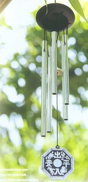

ВедаМост: Влияние архитектуры на психологию
2020.10.11 01:01
ВедаМост
Страницы
Главная Блог Семья Здрава Питание Земледелие Видеоблоги Реклама Вместевоскресенье, 20 января 2013 г.
Влияние архитектуры на психологию
”Homo Sapiens” человек разумный. Интересно, что такое определение человека напрямую связано с названием этой статьи. Оно говорит о том, что самым главным для человека является не его способность ходить, говорить или перетаскивать тяжести главными для человека является его разум и душа. Психология, наука о душе, рассматривает влияние разума и эмоций на наше физическое и ментальное состояние.
Альтернативная психология также рассматривает это влияние, хотя и под несколько другим углом зрения. Но вывод один наше здоровье напрямую зависит от состояния нашей психики, от мировоззрения, системы приоритетов, а главное от ощущения того, что мы находимся в правильном месте в правильное время, что жизнь наша наполнена смыслом и радостью. Главное чувство, к которому стремится каждый человек на Земле это чувство счастья и любви. Все мы планируем быть счастливыми ведь это природа человеческой души. Никто не планирует несчастья, но из 100 человек на вопрос “Счастлив ли ты?” едва ли не 95 не дадут утвердительного ответа.
Мы знаем, что о своем теле надо заботиться ему нужна еда, питье, его надо содержать в чистоте, ему нужны физические нагрузки для поддержания хорошего тонуса. Мы знаем, какие продукты полезны нашему телу, а какие вредны, мы знаем, что чистая вода полезнее воды, взятой из загрязненной реки, но при этом мы редко задумываемся, а что же полезно нашей душе. Мы редко задумываемся о том, что наши “грязные” мысли действуют на нас так же, как испорченная еда действует на желудок. И так же, как нашему физическому телу совсем не все равно одеты ли мы удобно, по погоде, или паримся летом в шубе, а зимой ходим в легком платье, наше тонкое тело также будет чувствовать себя легко и комфортно, если все вокруг нас будет приведено в состояние гармонии с Природой. А состояние тонкого тела напрямую влияет на состояние физического, то есть на наше здоровье, работоспособность и настроение.
Трудно представить себе тяжело больного человека абсолютно счастливым. Но при этом мы знаем, насколько важны его эмоциональный настрой и стремление вылечиться, уверенность в том, что он обязательно победит свою хворобу. Вера в исцеление и изменение мировоззрения, хода мыслей человека совершают чудеса. Значит, тонкое тело человека и его физическое тело неразрывно связаны невидыми ниточками, если изменение одного влияет на изменение другого. Тело это дом нашей души. А тело живет не в пустом пространстве, а в домах или квартирах, состояние которых также оказывает на него огромное влияние. Дом это как одежда для тонкого и физического тела. Мы хотим, чтобы зимой в доме было тепло, а летом прохладно, в таком доме нам будет комфортно и удобно. А у тонкого тела также есть свои понятия комфорта и удобства это энергетический фон вашего жилища.
Что такое энергетический фон? Его невозможно описать, используя ощущения наших органов чувств, как, например, зрения или слуха, его невозможно измерить имеющимися на сегодняшний день приборами, но его можно почувствовать, ощутить “кожей”, можно увидеть его влияние на нашу повседневную жизнь.
Мы можем ощутить его в виде тонких вибраций, дающих ощущение радости, счастья и спокойствия. Вспомните свои эмоции в момент посещения храма. Совершенно неважно, в каком храме Вы находитесь в православной церкви, католическом соборе, синагоге, или восточной пагоде в этот момент вас наполняет ощущение причастности, благоговения и смирения, даже если вы попали туда только как турист. Похожие ощущения посещают нас и при виде великих творений Природы иногда дивный горный пейзаж буквально приближает нас к пониманию Божественного, а около красивого озера хочется остаться подольше, встретить заход и восход Солнца на его берегах. Эти ощущения не плод нашего воображения, они абсолютно реальны, и их влияние на нашу психику также абсолютно реально. Просто в таких местах Природа абсолютно гармонична, и если знать законы, по которым эта гармония достигается, то можно использовать их в нашей повседневной жизни.
Эти законы давно не являются тайной за семью печатями. О них знали еще наши предки более 5000 лет назад.
В 1922 году индийский археолог Р. Банарджи обнаружил на одном из островов реки Инд древние руины. Их назвали Мохенджо-Даро, что в переводе означает «Холм мертвых». Этот город построен по очень интересному принципу: улицы, протянутые словно по линейке, дома в основном одинаковые, пропорциями напоминающие коробки для тортов. Но за этой «тортовой» формой иногда скрывалась и такая конструкция: в центре двор, а вокруг него четыре-шесть жилых комнат, кухня и помещение для омовения . Сохранившиеся в некоторых домах пролеты для лестниц позволяют предположить, что строили и двухэтажные дома. Главные улицы были десятиметровой ширины, сеть проездов подчинялась единому правилу: одни шли строго с севера на юг, а поперечные с запада на восток. Но этот монотонный, как шахматная доска, город предоставлял жителям неслыханные по тем временам удобства. По всем улицам протекали арыки, и из них в дома (хотя около многих обнаружены колодцы) подавалась вода. Но что еще важнее каждый дом был связан с системой канализации, проложенной под землей в трубах из обожженного кирпича и выводящей все нечистоты за городскую черту. Это было гениальным инженерным решением, позволившим на довольно ограниченном пространстве собираться большим людским массам.
По тем же принципам строгая ориентация по сторонам света, правильная форма, свободное пространство в центре здания были построены пирамиды древних майя на полуострове Юкатан, храмы в Центральной и Восточной Азии, дворцы периода Возрождения и древне-римские постройки. Великий архитектор Витрувий, живший около 2-х тысяч лет назад оставил нам свое фундаментальное произведение «De re architectura» , один из разделов которого целиком повторяет раздел из Манасары, ведического трактата, посвященного архитектуре. Манасара древнейший дошедший до наших дней документ, дающий четкие инструкции о правилах строительства, причем наряду с чисто практическими советами в нем дается также четкое описание влияния постройки именно на тонкое тело человека. В нем объясняется, каким образом привлечь и сконцентрировать позитивные энергопотоки и заблокировать негативные. Причем источником всей энергии, попадающей на Землю, является Солнце. И уже в наши дни современные ученые полностью подтверждают жизненность и правильность принципов, описанных древними Ведическими писаниями.
Манасара это часть Вед, великой инструкции к нашей с вами жизни, записанной около 5000 лет назад. Наука, дающая рекомендации к правильному построению жилья называется Васту. Так же как и Аюрведа, часть Вед, посвященная здоровью человека, Васту рассматривает человека не только как физическое тело, но как общность тела и души, общность грубого и материального тел. И также, как Аюрведа, Васту учит нас приводить в гармонию не только физическое, но и тонкое тело, неразрывно связанное с окружающим нас миром.
Для нормального физического здоровья человеку необходима постоянная циркуляция энергии по чакрам особым энергетическим точкам в тонком теле. Если циркуляция нарушена, человек заболевает. Оказывается, и у домов тоже есть система чакр, которая находится на линии Северо-Восток Юго-Запад. Точно также, как поток праны через чакры человека обеспечивает энергией и силой все клетки человеческого тела, поток праны через чакры дома доносит энергию в любую точку здания. Если поток позитивной энергии проникает в дом безпрепятственно, а поток негативной полноценно блокируется дом здоров и люди, живущие в нем получат все преимущества и поддержку Природы.
Но, к сожалению, в наши дни эти законы почти полностью игнорируются. Только в последнее время люди стали прислушиваться к рекомендациям ученых, которые говорят о том же, о чем написано в книгах древних. Современные физики ввели понятие био-фотона частички солнечной энергии, оказывающей прямое влияние на человеческий организм. Био-фотоны имеют свойство накапливаться в воде, отдавая потом свою энергию и информационные кодировки помещению и людям, находящимся в нем. Если вода находится в «позитивной» точке дома, то эта информатика будет нести положительный потенциал, а если нет вода практически накапливает, удерживает и увеличивает уровень негативной энергии в доме. Также неоспоримым является факт, что солнечное излучение меняется с течением дня утреннее ультра-фиолетовое очень полезно для здоровья, а вечернее инфра-красное вредно. Древние ничего не знали о био-фотонах, но о влиянии Солнечного света они знали прекрасно. Один их главных постулатов Васту гласит: откройте свой дом утренним лучам Солнца и тогда весь день вы сможете пользоваться его позитивной энергией.
Психологи говорят, что соблюдение правильного режима дня в соответствии с Солнцем источник физического и, главное, душевного здоровья. Человек, просыпающийся с восходом Солнца, встречающий рассвет на весь день заряжается энергией. Но и для вашего дома правилен тот же режим дня встречать рассвет открытыми окнами, впуская утренний солнечный свет внутрь дома значит зарядить положительной энергией не только все пространство внутри дома, но и тех, кто в нем находится. А вот вечерние солнечные лучи вредны не только для человека, но и для дома, поэтому Васту рекомендует строить дома так, чтобы Южный и Западный сектора дома были максимально закрытыми, с Северный и Восточный максимально открытыми.
Применение на практике несложных законов Васту помогает не только ощутимо повысить энергетику людей, находящихся в “здоровом” доме, способствуя улучшению настроения, позволяя наладить отношения с родственниками и друзьями, но и привлекает в нашу жизнь еще один аспект энергии деньги. Но об этом более подробно в следующей статье.
В последнее время наука Васту становится более известной и, как следствие ее правильности популярной. Ее законы просты для понимания и применения. Когда мы плохо себя чувствуем, то обращаемся к врачу. А если плохо чувствует себя ваш дом, лучше обратиться к опытному консультанту по Васту. Каковы симптомы болезни вашего дома?
Самый серьезный признак нездоровья Вашего дома Ваши болезни. Если Вы заметили, что с того времени, как въехали в новую квартиру, ваше здоровье ухудшилось Вам нужен не только семейный терапевт, но и доктор Васту. То же самое касается взаимоотношений с родственниками и друзьями. Если Вы заметили, что отношения с ними натянуты, ссоры вспыхивают буквально на пустом месте Вам нужен не только психолог, но и доктор Васту. Если у Вас деньги буквально протекают сквозь пальцы, если несмотря на все Ваши попытки наладить свое материальное положение оно никак не хочет налаживаться Вам нужен не только консультант-экономист, но и доктор Васту. И наконец, Вы на собственной шкуре оценили правильность выражения “стены давят”, Вам не комфортно дома, тяжело на душе, если только придя домой Вы чувствуете усталость и нежелание что-либо делать Вам нужен не только дизайнер по оформлению помещений Вам нужен доктор Васту.
Что изменится, когда Ваш дом будет «вылечен»? В первую очередь, гармония в доме укрепит Ваше здоровье, как физическое, так и ментальное. А физическое здоровье, как уже было сказано напрямую зависит от здоровья тонких тел человека пранического, астрального, эфирного. Наука Васту позволяет привести в норму тонкий мир нашего жилья, который неразрывно связан с нашими собственными тонкими телами. В отличие от более известной на сегодняшний день системы Фэнг Шуй, которая рассматривает только физический и немного энергетический уровень, Васту “копает” гораздо глубже в дополнение к выше упомянутым рассматривается также состояние кармического и информационного полей, а энергетический уровень, т.е. уровень праны в доме, рассматривается более широко и детально. Прана это жизненная энергия, поступающая в организм с дыханием. Если воздух Вашей квартиры насыщен праной, Вы с каждым глотком воздуха получаете столь необходимую всем нам жизненную энергию. Вся Вселенная помогает Вам. У Вас есть силы доводить до конца все задуманное в конце дня Вы не чувствуете разбитости и уныния. Конечно, только гармонизация дома не решит всех Ваших жизненных проблем, просто поменяется Ваше отношение ко всему тому, что мы называем трудностями. Васту не изменит Вашей судьбы, просто Ваша жизнь станет легче, благодаря обретенной гармонии и покою ума. На психологическом уровне возникнет ощущение благополучия и внутреннего комфорта. Наладятся Ваши отношения с родными и друзьями. Вы с большей готовностью сможете делиться своей любовью с окружающими Вас. А ведь именно для этого мы с Вами и находимся здесь, на Земле.
С любовью к Вам Ася (Леана) Мигдаль, д-р Васту
toloka.info
avega.net.ua
В дополнение к теме о влиянии архитектуры на психику и здоровье человека. Для сравнения и размышления выставляем несколько фотографий домов.
ВедаМост
Категории: Видео , Психология , Развитие мировосприятия
ПОДЕЛИТЬСЯ С ДРУЗЬЯМИ
Комментариев нет:
Отправка комментария
Следующее Предыдущее Главная страница Подписаться на: Комментарии к сообщению (Atom)
ПУТЬ ПРОСВЕЩЕНИЯ
Меню
Культура и наследие Развитие мировосприятия Психология Проекция Язык и лингвистика История Экономика Археология Астрономия Непознанное Политика и общество Эгрегоры и маятники Система контроля Пиар-программы и СМИ Кинопанорама Трезвая Родина Военная тема Наука и технологии Семья и дети Здоровье Вегетарианство Сыроедение Питание и оздоровление Обустройство быта Природное ЗемлеДелие В мире животных ПриродоВедение Разное и полезное С улыбкой Аудио ВидеоПопулярное за неделю
ПОРА ПРОСЫПАТЬСЯ! Условное 5G излучение может быть использовано из передвижных машин, а также из дронов. Излучение может быть не то... Очищение организма растительным маслом без глотания Этот метод очищения и оздоровления организма известен мне уже на протяжении более 20 лет, но не воспринимался мной как серьёзное средс... Солевые повязки исцеляют даже от рака Данный рассказ был найден в старой газете. Речь в нём идёт об удивительных целительных свойствах соли, которую применя... СПИД крупнейшая афера XX века Вот уже около 20 лет врачи твердят об опасности вируса СПИДа, но самого вируса на самом деле не существует. Следовательно, зарази... Секрет вечной молодости в позвоночнике? Как омолодиться, вися вниз головой В поисках секрета вечной молодости и эликсира для омоложения многие из нас готовы потратить энные суммы с несколькими нулями, а также ... 42 диких растения, которые можно употреблять в пищу Вот несколько распространённых растений, которые безопасно употреблять в пищу, если вы надолго окажетесь в дикой природе: Всемирная организация здравоохранения ПРЕДУПРЕЖДАЕТ. Часть 1 В память всем, погибшим от современной медицинской СИСТЕМЫ!!! Введение. Сразу хочу сказать, что я сам из семьи медиков. И всю эту «... Кто такие украинцы Раньше я старался обходить эту тему стороной, чтобы избежать лишних холиваров. Но рано или поздно об этом все равно нужно было написат... Свободные радикалы и антиоксиданты Каждый современный человек обязательно слышал словосочетание «свободные радикалы» - причем в негативном контексте. Что такое свободные... Осторожно - пища! Список опасных продуктов Информация больше для тех, кто еще живет в городах и придерживается обычного типа питания. В этом материале хотелось бы ...Архив блога
► 2012 (733) ► февраля 2012 (8) ► марта 2012 (17) ► апреля 2012 (55) ► мая 2012 (109) ► июня 2012 (69) ► июля 2012 (19) ► августа 2012 (83) ► сентября 2012 (81) ► октября 2012 (58) ► ноября 2012 (131) ► декабря 2012 (103) ▼ 2013 (569) ▼ января 2013 (95) Сыроедение и духовность Кто запретил Radosvet.net? Как ложь влияет на формирование личности детей? Алюминий. Что мы знаем о нём и чего не знаем? Встреча с сыроедом Бабенко Почему растительные белки ценнее животных белков? Роды дома. Личный опыт «Исторические мифы» и Другая реальность Как вырастить хурму из косточки? Возвращение балалайки Галина Шаталова - Система естественного оздоровления Поговорим о сЧастье! Сыроедение - Форум врачей сыроедов Кесарево сечение Аюрведа - искусство жизни. Сверхвозможности. Исцел... Почему так мало настоящих мужчин. Роль женщины На пластиковой игле Торт Сказка Запретные темы истории: Загадки Древнего Египта Почему Любовь уходит? Запретные темы истории: Неизвестная Мексика Причины развала СССР Основные факторы, сильно влияющие на здоровье и кр... 2013 - Всё будет чики-пуки! Запретные темы истории: Перу и Боливия задолго до... Одна из причин алкоголизма Регенерация мёртвой ткани возможна Сорок уроков русского . Урок 8. С.Т.Алексеев Как помочь мужу стать успешным? Великая тайна воды - сборник из 22 фильмов Запретные темы истории: Ковчег Завета: эфиопский ... ЗЕМЛЯНЕ. Самый сильный фильм Теория полой Земли Вечно больное человечество Запретные темы истории: Восточная коллекция: от н... Зимний День Бога Перуна Запретные темы истории: Земля обетованная О Законе подлецов и не только Ваши возможности ограничены только вашим намерением Жданов В.Г. Лекция в Череповце (15.12.2012) Зачатие, беременность, роды без боли. Семейные отн... Читаем закон Магнитского Послепраздничное ПОД ПРИЦЕЛОМ МОЗГ: ПСИХОТРОННОЕ ОРУЖИЕ. Фильм Г. Ц... Растительная клетчатка и её благотворное действие ... Приглашает Борис Ноткин - Михаил Задорнов Дети, которых воспитал телевизор Запретные темы истории: Колыбель современной циви... Сорок уроков русского . Урок 9. С.Т.Алексеев Интервью с Виталием Сундаковым Как избавиться от крыс и мышей с помощью трав Александр Лукашенко ответ «Deutsche Welle» Созидание благодетельного потомства Русский космос. Лунный лифт Народная культура сегодня в моде Древние технологии в сооружениях Санкт-Петербурга Домашние беседы с отцом Александром. Выпуск 9 Опасность ГМО для человека и природы Утро Сварога - Зимние посиделки с Ведагором Документальный фильм Малыши Истинные причины раковых (онкологических) заболеваний Голос Влияние архитектуры на психологию Всемогущество мусора Лучшее за декабрь 2012 Правда о БАДах Коловрат - символ Солнца Ребенок как самодостаточная личность Эксперимент фастфуда В поисках Аратты Магия славянской женщины. Счастье материнства, час... Зепп Хольцер. Пермакультура О вреде молока и молочных продуктов Сорок уроков русского . Урок 10. С.Т.Алексеев Полтора века коляске время подвести итоги Сколько стоит ретвит Навального? Осваиваем запыреенный участок с помощью мульчи Славяно-Арийские Веды в исполнении Андрея Миронова Целебная сила русской печи Земля не вращается вокруг Солнца. Часть 2 Конфеты Трюфели ГРАЖДАНИН И ЗЕМЛЯ ВСЕ БЕДЫ ЖЕНЩИН ОТ УМА И недостатка мудрости Ох, уж эти кастрюльки со сковородками... Как и поч... Важность кормления ребёнка материнским молоком Контрастный душ возвращает молодость Странное дело. Гибель империи Кто такие Анастасиевцы? РАК. Сыроедение излечивает это! Как Лиса сделала из Кота Тигра. Вера в мужа Сыроедение и физические нагрузки Вилки вместо ножей / Вилки вместо скальпелей Интервью с удивительной женщиной Тестостерон и потенция - влияние образа жизни Липкий Познер и наезд на Доренко ► февраля 2013 (92) ► марта 2013 (75) ► апреля 2013 (44) ► мая 2013 (28) ► июня 2013 (29) ► июля 2013 (40) ► августа 2013 (22) ► сентября 2013 (23) ► октября 2013 (44) ► ноября 2013 (34) ► декабря 2013 (43) ► 2014 (357) ► января 2014 (31) ► февраля 2014 (33) ► марта 2014 (70) ► апреля 2014 (17) ► мая 2014 (53) ► июня 2014 (47) ► июля 2014 (17) ► августа 2014 (21) ► сентября 2014 (14) ► октября 2014 (16) ► ноября 2014 (16) ► декабря 2014 (22) ► 2015 (244) ► января 2015 (25) ► февраля 2015 (12) ► марта 2015 (21) ► апреля 2015 (5) ► мая 2015 (27) ► июня 2015 (29) ► июля 2015 (32) ► августа 2015 (39) ► сентября 2015 (20) ► октября 2015 (6) ► ноября 2015 (14) ► декабря 2015 (14) ► 2016 (179) ► января 2016 (24) ► февраля 2016 (50) ► марта 2016 (31) ► апреля 2016 (19) ► мая 2016 (18) ► июня 2016 (14) ► июля 2016 (12) ► октября 2016 (6) ► декабря 2016 (5) ► 2017 (34) ► января 2017 (7) ► апреля 2017 (9) ► мая 2017 (2) ► июня 2017 (9) ► октября 2017 (2) ► ноября 2017 (5) ► 2018 (7) ► марта 2018 (7) ► 2020 (1) ► апреля 2020 (1)Перевод страницы
Самое популярное
Солевые повязки исцеляют даже от рака Всемирная организация здравоохранения ПРЕДУПРЕЖДАЕТ. Часть 1 Очищение организма растительным маслом без глотания Живая еда. Сила проростков За что "отвечают" левое и правое полушарие нашего мозга Осторожно - пища! Список опасных продуктов Сложности перехода на сыроедение, кризы и симптомы очищения Исцеление от раковых заболеваний и Витамин В17 Гарантия отрезвления и избавления от курения. В.А.Фахреев Лечебные свойства пищевой содыПоддержка сайта
Яндекс. Деньги 410011693552690
Благодарим!
живая буквица
Мы в Твиттере
Рекомендуем
КУЛЬТУРА ПРОЦВЕТАНИЯ Пять причин делать упражнение "Ходьба на коленях": укрепит позвоночник, уйдёт лишний вес... - Ходьба на коленях - древняя даосская простая и эффективная практика для здоровья и лечения всего организма. Систематические тренировки не только устраняют... 6 часов назадЗагрузка...
ВедаМост Инфо
